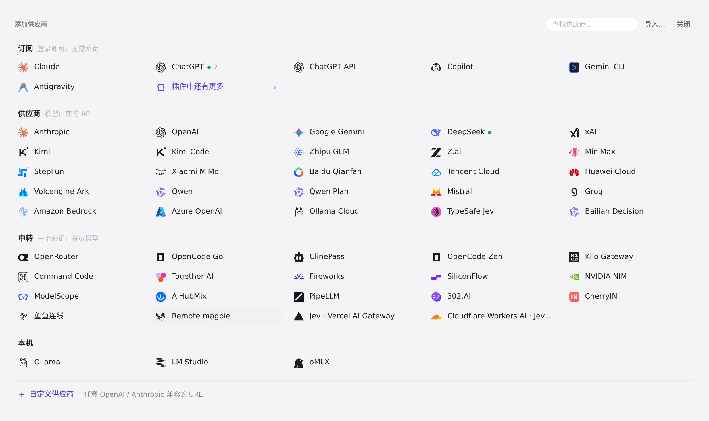

#1282 界面预览
commit 19e9c78 · 回到 PR · diff 让 remote magpie 供应商取模型列表时一并发现远端显式标记的决策模型（kind: decision），并把这份可为空的决策列表传给供应商编辑器与网关（带 X-Magpie-Deciders 时 /v1/models 返回它们），界面上不再把 Jev Router 之类的聊天模型猜成决策模型，并保留远端暴露的检索模型。
红线是鼠标走过的轨迹，红色圆环是一次点击；底部文字是这一步在做什么。空格暂停，← → 逐段查看。

远程 magpie 供应商的入口 · 添加供应商面板中的 Remote magpie 预设
 网关 System One 的模型字段 · System One 示例里的模型字段，远端标记的决策模型会出现在这一栏
网关 System One 的模型字段 · System One 示例里的模型字段，远端标记的决策模型会出现在这一栏